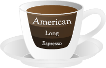

Modular philosophy. Sometimes you simply don’t need to use all the features of an entire JavaScript Framework. Tiramisu lets you choose exactly what you need leaving out all the unused stuff: you can decide how much coffee to put into your Tiramisu!
